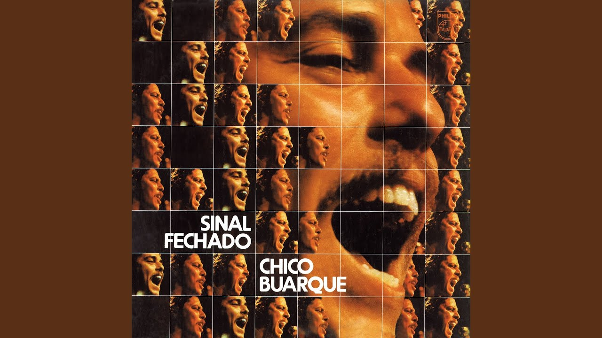

Sinal Fechado - Chico Buarque

Sinal Fechado é um disco gravado por Chico Buarque de Holanda em 1974, que levou nome de uma música de Paulinho da Viola. Devido ao fato de seu álbum anterior, trilha sonora da peça Calabar, ter sofrido muitos cortes da censura, aqui ele interpreta peças compostas por amigos, como Caetano Veloso – "Festa imodesta" – e Tom Jobim – "Lígia".
Tracklist